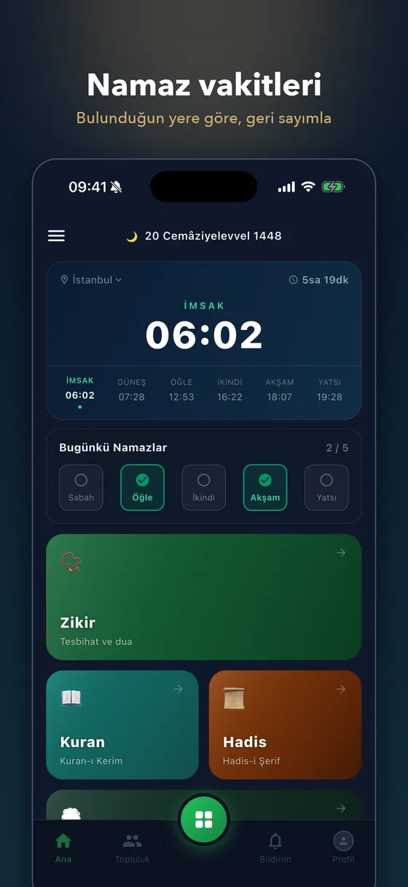
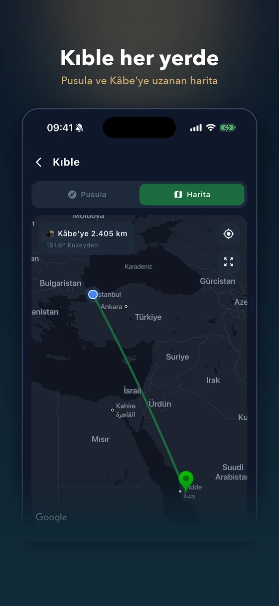
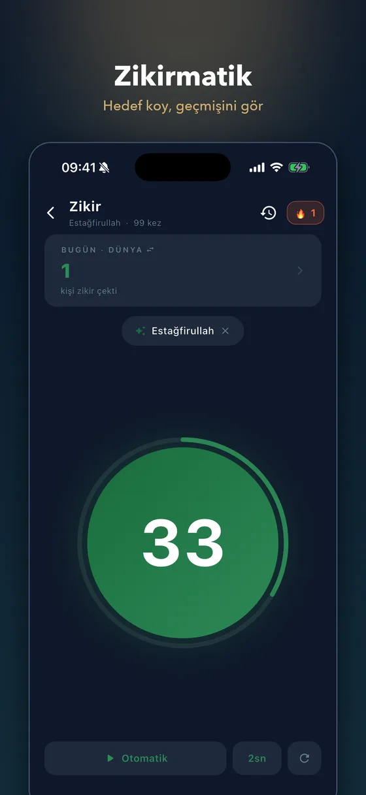
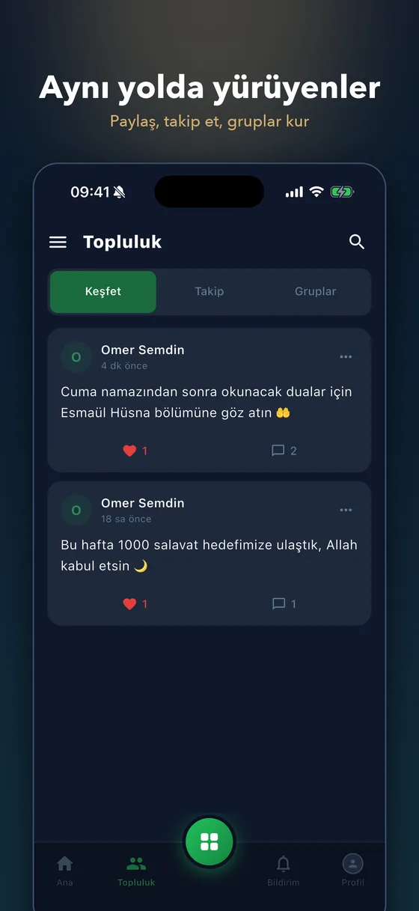
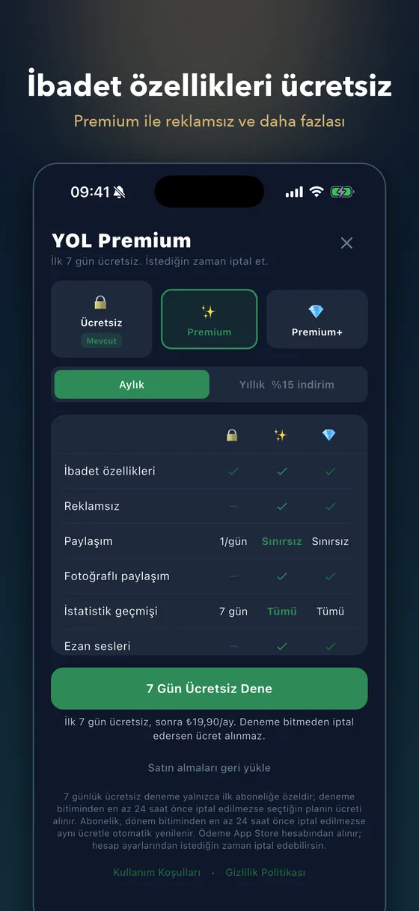

YOL
Namaz Vakti & Zikir · iOS & Android
● App Store'da yayında
İbadet hayatını kolaylaştıran ve kullanıcıları aynı yolda yürüyenlerle buluşturan bir uygulama.
Fikirden tasarıma, sunucu tarafından mağaza hazırlığına kadar her aşamasını tek başıma geliştirdim.
- Konuma göre namaz vakitleri, geri sayım ve ezan sesli bildirim
- Kıble pusulası ve Kâbe'ye uzanan çizgiyi gösteren harita
- Zikirmatik, seri takibi ve haftalık liderlik tablosu
- İnternetsiz çalışan Kur'an-ı Kerim, hadisler ve Esmaül Hüsna
- Topluluk: paylaşım, takip, gruplar, ortak hatim ve zikir hedefleri
🛡️ Yapay zekâ destekli içerik denetimi
📱 Tek kod tabanıyla iOS + Android
💎 Premium abonelik sistemi
FlutterFirebaseCloud FunctionsGoogle MapsRevenueCatGemini AI
App Store'dan indir
Google Play · yakında





← kaydır · büyütmek için dokun →